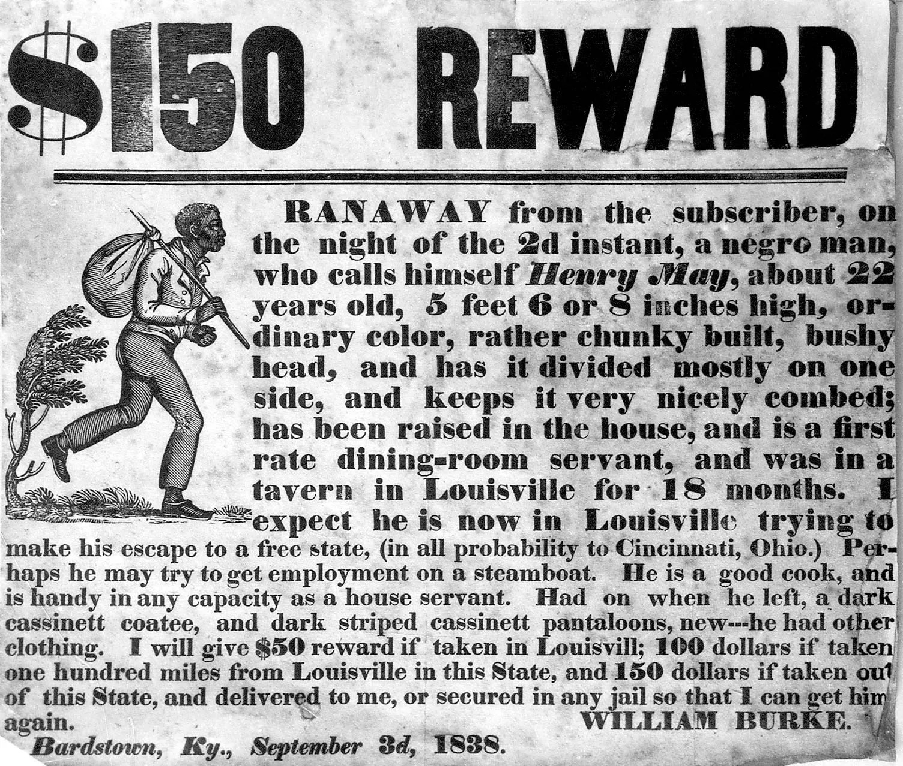
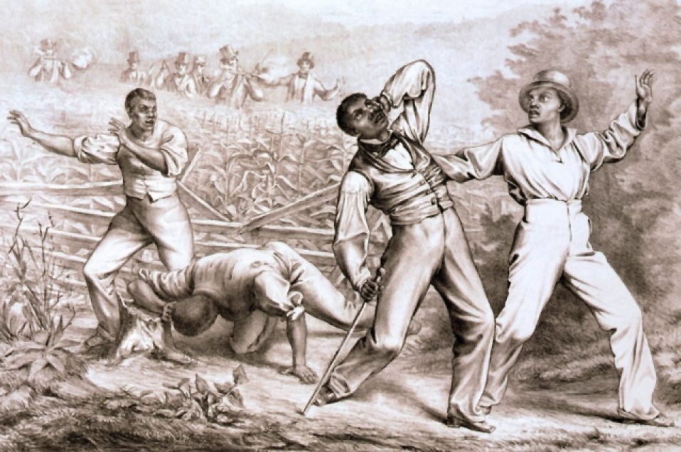
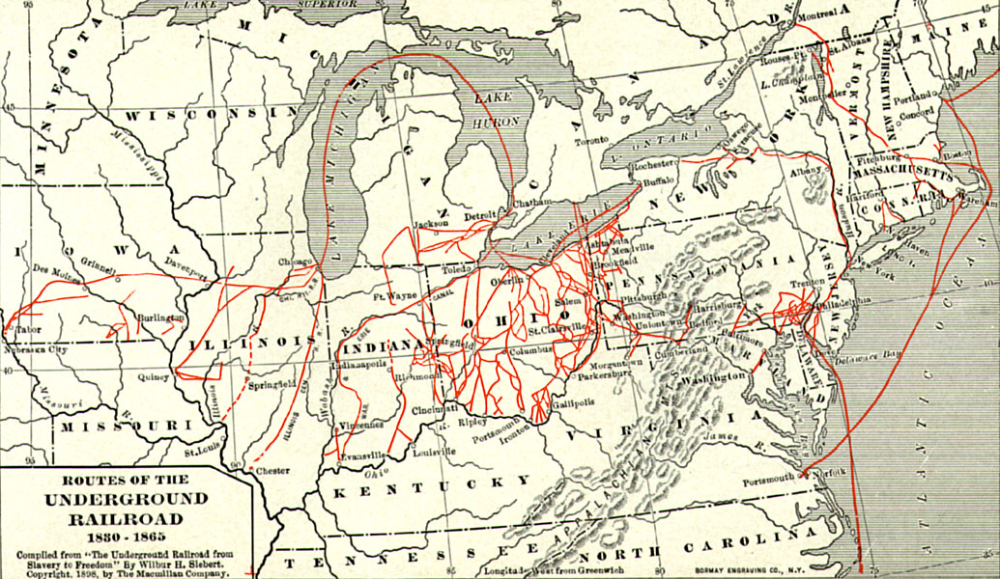

The highly renowned novel Beloved by Toni Morrison is, contrary to many first opinions, a book primarily about love, rather than one about slavery. Morrison describes the most painful, joyous and viscerally real aspects of love through her masterful command over the medium. That being said, perhaps the most prominent vessel for this love is the institution of slavery, which is a key element to understanding the novel. While it is not the primary topic by any means, the enslavement of African Americans in America is a major part of the text vital to its message.
Given this, the motif I have chosen to pursue throughout the novel is cruelty and enslavement. However, to understand the impact this has on the novel, prerequisite knowledge of the institution of slavery is necessary. This context is shared in the informational portion of this project as detailing the Fugitive Slave Acts. Given their catastrophic impact on African Americans at the time alongside its relevance to the text, an understanding of these laws enables a more complex understanding of the text.
Slavery is mentioned throughout the novel in the form of the memories of main characters Sethe and Paul D. The analysis of these experiences allows a complex understanding of the work as a whole. One such passage and its literary strategies is to be analyzed to understand the effects of slavery on the individual, and how they persist beyond slavery itself has ceased.
Finally, to artistically convey slavery's role in Beloved is a poem about the triumph of tenacity and hope over the institution of slavery, presented in the form of a sonnet. While not addressed to or written about an individual, it is a love poem which addresses the whole of the enslaved/formerly enslaved population. Though a form of poetry uncommon to the circumstances and the time of slavery, a sonnet presents structure and resolution that was missing from the lives of slaves, but ultimately won.
Background
The fugitive slave acts were laws that legalized the recapture and reemployment of escaped fugitive slaves in the United States. The first was passed in 1793 and the second much stricter law was passed in 1850.
Northern states abolished slavery many years before the south, making the free northern states a safe haven for escaped slaves, which was true until the implementation of the fugitive slave acts. The 1793 law allowed southern slave hunters to capture suspected slaves in northern states and bring them to the southern slave states where they would be reinstituted into slavery.
Until 1850, the 1793 Fugitive Slave Act found difficulty establishing legitimacy in northern free states where slavery was illegal. The general northern anti-slavery sentiment accompanied by the large abolitionist presence as well as the Underground Railroad made the law rarely enforced.
The Fugitive Slave Act of 1850 ended this, applying firmer pressure to northern states specifically and the slaves who had escaped there. Northern cooperation became expected and significantly greater provisions were given to slave hunters to aid them in the recapture of escaped slaves. This law made the arrest and imprisonment of completely innocent African Americans common, and rose tensions in the growingly uneasy mid-19th century United States, eventually spurning the American Civil War.
The FSA in Relation to Beloved
Ohio was a designated free state which illegalized the sale and imprisonment of African Americans, but the Fugitive Slave Acts were of course legal in the state.
Major cities such as Cleveland, Columbus and Cincinatti where given federal funding for criminal warrants and provisions for the recapture of escaped slaves.
Though Ohio was a free state, there were a great number of people living in the state who supported slavery, and in turn disapproved of the Underground Railroad. These sympathisers often attacked the abolitionists operating the railroad as well as the fugitive slaves among its numbers.
Even in a free state like Ohio, until the eventual abolishment of the Fugitive Slave Acts in 1864, it was a completely feasible and real threat that slave hunters would appear at the home of an African American to violently return them to slavery, often regardless of innocence.
In her novel Beloved, Toni Morrison explores the trauma caused by the lasting effects and legacy of the institution of slavery. Sethe and Paul D’s both shared and individual experiences shed light on the communal and personal wounds suffered beyond the institution’s end. In a passage in chapter 6 in which Paul D. recalls his experiences at Sweet Home with Sethe, Morrison uses the painful symbolism of iron used to bind alongside the cruel and ironic personification of Mister the rooster in order to convey the horrendously inhumane conditions slaves were forced to endure as well as their lasting impact, ultimately conveying that even when the institution of slavery is disestablished, the deep physical and emotional scars of slavery plague the mind of a former slave just as painfully as the imprisonment itself.
The passage begins as Paul D. inquires about Halle, Sethe’s former lover, and the two hesitantly share details of their personal experiences. The power of the symbol of iron is described as “And if Paul D saw him and could not save or comfort him because the iron bit was in his mouth, then there is still more that Paul D could tell me and my brain would go right ahead and take it and never say, No thank you.” (Morrison, 35) Iron as an inanimate object is not inherently bad or good, and is rather given purpose by those who wield it. Used to physically bind Sethe and Paul D., iron becomes symbolic for slavery and those who perpetuate it. By withdrawing their ability to speak, the iron bit takes more away than just the physical freedom of Paul D. While Paul D.’s physical scars obtained from the use of binding iron serve as a harsh reminder to him of his p ast, his emotional scars ring just as prevalent in his mind. Unable to interact and bond with those around him, he is forced to internalize his pain, carrying it into the future, even beyond his time as a slave.
While the physical wounds and their mental counterparts that Sethe and Paul D. experience throughout the novel persist with them their entire lives, no part of their past rings as true as the sheer dehumanization that they faced while at the Sweet Home plantation. While describing a farm rooster roaming the grounds, Paul D. regales “Mister, he looked so…free. Better than me. Stronger, tougher. Son a bitch couldn’t even get out the shell by hisself but he was still king and I was…” Paul D stopped and squeezed his left hand with his right. He held it that way long enough for it and the world to quiet down and let him go on.” (Morrison, 36) He is forced to live in a situation in which an animal has more innate freedom than he does. When valued as less than a pathetic creature such as Mister, a person takes to heart that they truly are a lesser creature. Beyond the shackles of slavery, this crippling self doubt will haunt former slaves as long as they live. As belittling as it is as a human being to be valued as less than livestock, what is most dehumanizing is that the rooster gets to have an identity that Paul D. does not. “Mister was allowed to be and stay what he was. But I wasn’t allowed to be and stay what I was. Even if you cooked him you’d be cooking a rooster named Mister. But wasn’t no way I’d ever be Paul D again, living or dead” (Morrison, 36) Paul D. laments to Sethe about his experience. Accompanying this self-doubt is the lack of even an identity. While in chains, the only thing that a slave can truly know for certain is that they have a name and that they are a person. However, this dehumanization makes a slave doubt even that. When a slave finds themself free from imprisonment, this process does not end as quickly as slavery itself does, and persists with the former slave well beyond their time in chains.
This passage focuses on the actual details of slaves experiences in imprisonment in order to understand and convey the lasting impacts of these conditions. Slaves are left with physical scars and wounds that serve as permanent reminders of their trauma, but more importantly grievous psychological wounds that will remain with them as well. However, where a physical scar acts solely as a reminder of that pain, the mental trauma bred by the psychologically torturous conditions of slavery perpetuate the same real pain felt by slaves far beyond their time in chains and into their lives as free individuals.
Amidst the chains and whips of days of yore,
A people's anguish born of man's disdain,
In shackles bound, their cries forever soar,
Through time and space, a legacy of pain.
For slavery's horrors, have long passed away,
But in its wake, a wound that shall ne'er heal,
Intergenerational trauma holds its sway,
A haunting pain that is all too real.
The shackles may have gone, but the scars remain,
A legacy of sorrow, pain, and strife,
A communal pain that rings through each vein,
A wound that seems to touch and scar all life.
Yet seen in the face of such adversity,
Is a glimpse of healing, peace, and unity.